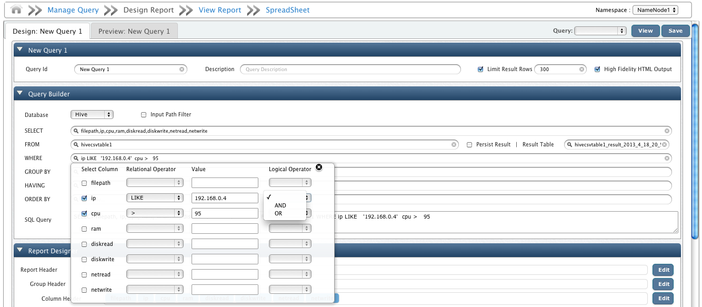
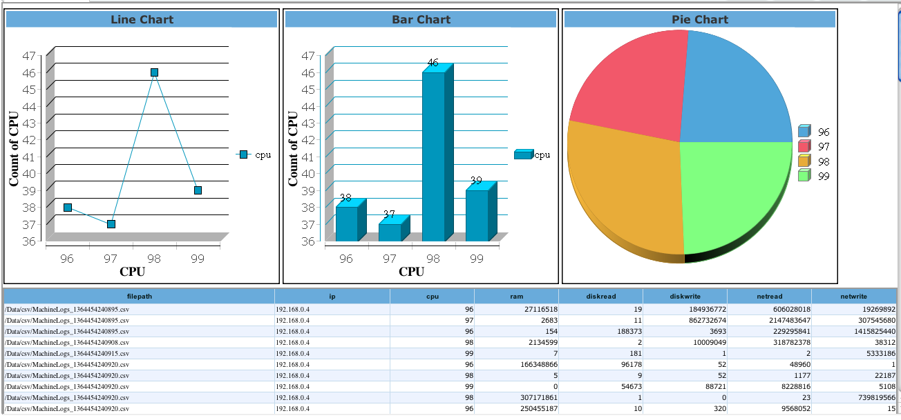
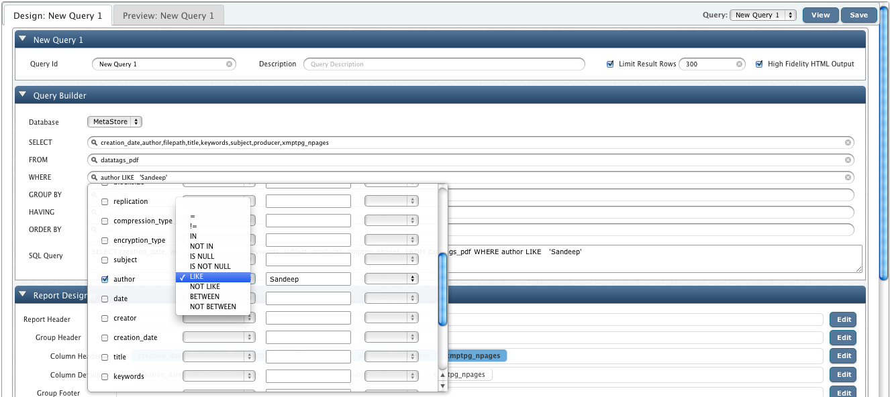
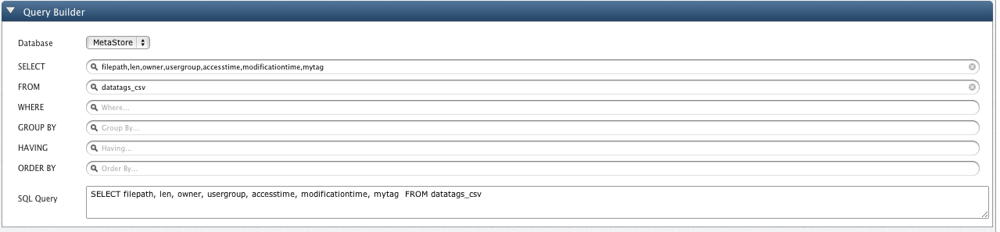
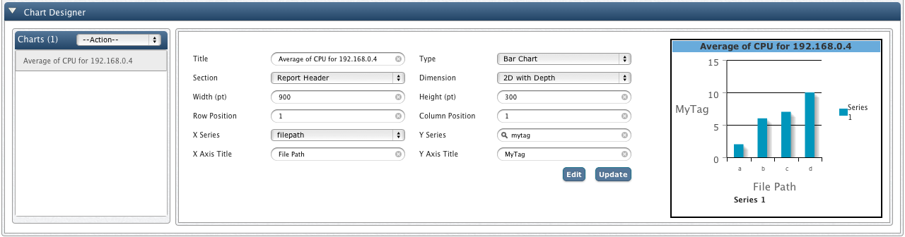
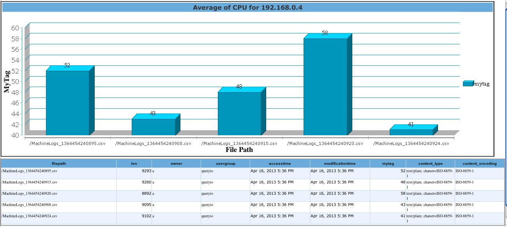

Querying Hive
QueryIO provides extensive Web-based UI to drive MapReduce jobs via SQL employing Hive.
You can configure a Hive query through "Query Designer". Select Hive database, select the configured Hive Data Definition and construct your query through these smooth UI components.
In Query Designer module there are few additional components involved in case of a Hive query:
- Input Path Filter: Hive has several limitations on the selection of the files that should be processed:
- Hive just supports single directory. It cannot process files in multiple directories at the same time.
- Hive does not support recursive processing. This means, if you have multilevel directories, it will process only those files that exist in the top level directory.
- You cannot select specific files from all the files that exist in the same directory. This means, if you want Hive to process only the selected files from a directory, you would have to move the other files to a different directory.
But, normally you might want to perform the query only on a group of files from the files existing in the same directory, or you might want to process the entire directory recursively.
QueryIO has a very flexible file selection process. You can choose to process entire directory recursively and you can even select a specific group of files from all the files existing in the same directory.
QueryIO provides file filter option to let you specify exactly the files or the group of files on which you want to perform the query.
Filtering can be done based on the datatags that is stored in the database for every file present in the cluster.
Basic datatags that is always present in the database for every file type comprises of following fields:
Filepath, Length, Owner, Usergroup, Access time, Modification time, Permission, etc.
Now, lets consider the use case of a typical vendor who stores all of his invoices on the cluster and wants to perform a query to find the top sold items of the day. Intuitively, he would want to exclude the previous day's invoices from the consideration.
If the datatags for his invoices is stored in the DATATAGS_INVOICES table, he can always create a file filter like:
SELECT FILEPATH FROM DATATAGS_INVOICES WHERE MODIFICATION_TIME > '2012-12-02';
After specifying this filter, if you execute the query, only selected files will be processed. This would save you a great deal of time as over a period of time the total number of files on your cluster might grow to the order of millions millions and processing all of those files just to get the result for the day would be counter-intuitive.
- Persist Results | Result Table: For large datasets, you might want to store the results of your Hive query to avoid running same job again and again.
You can persist the results of your query into a result table by checking this box and providing a proper result table name.
QueryIO stores this result on HDFS and for future usage you can refer this table by selecting it from the provided list of tables for Hive database.
To continue our previous example, lets create a query that shows all entries in our csv files having IP like '192.168.0.4' and CPU greater than 98.

The query runs a Mapreduce job to fetch results as shown below.

The benefit of associating Data Tags with a file is that you can query your files considering attributes specific to the file type.
For example you can query a document based upon its Author or Title or some image file based upon its PixelAspectRatio or Dimensions.
QueryIO provides "Query Designer", which is an effortless UI module, to construct your SQL queries.
To query Data Tags select Metastore database, select your file specific table and construct your query through these smooth UI components.
For our example, we are going to query datatags_pdf table for pdf files authored by 'Sandeep'.

QueryIO runs this SQL query to fetch results as shown below.

To extend our example, this is the result for query on table "datatags_csv" where we have added a Custom Data Tag "MyTag".
The graph below shows the Tag Value, as "Average of CPU for 192.168.0.4", on Y-axis and individual File Path on X-axis.


Copyright © 2015 QueryIO Corporation. All Rights Reserved.
QueryIO, "Big Data Intelligence" and the QueryIO Logo are trademarks of QueryIO Corporation. Apache, Hadoop and HDFS are trademarks of The Apache Software Foundation.